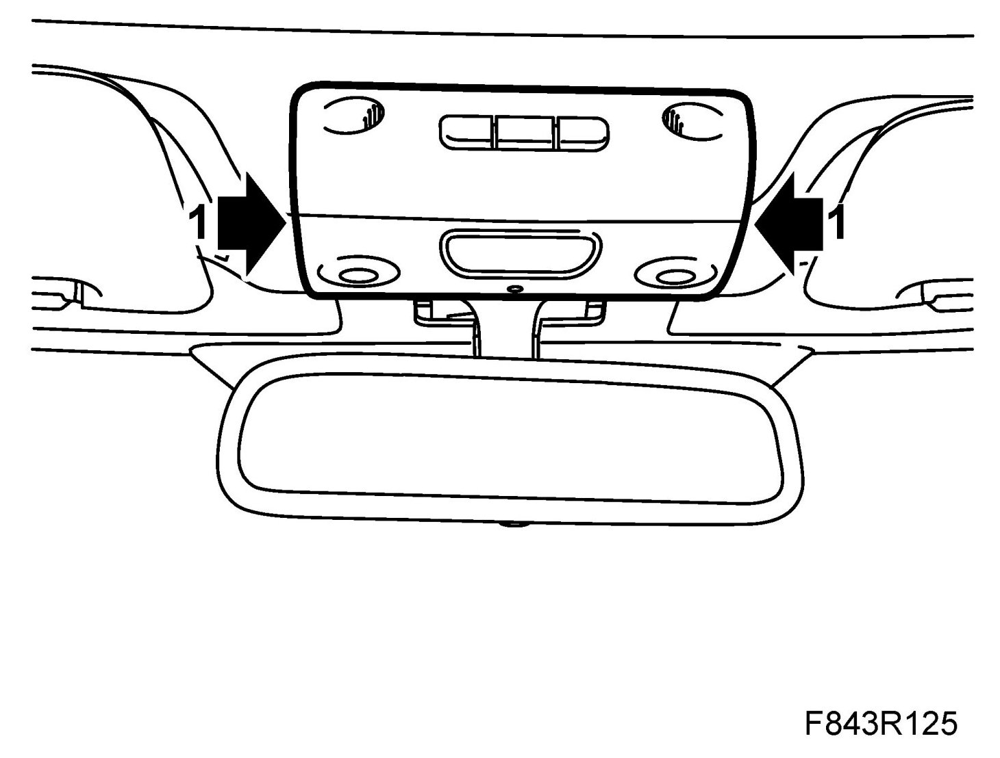
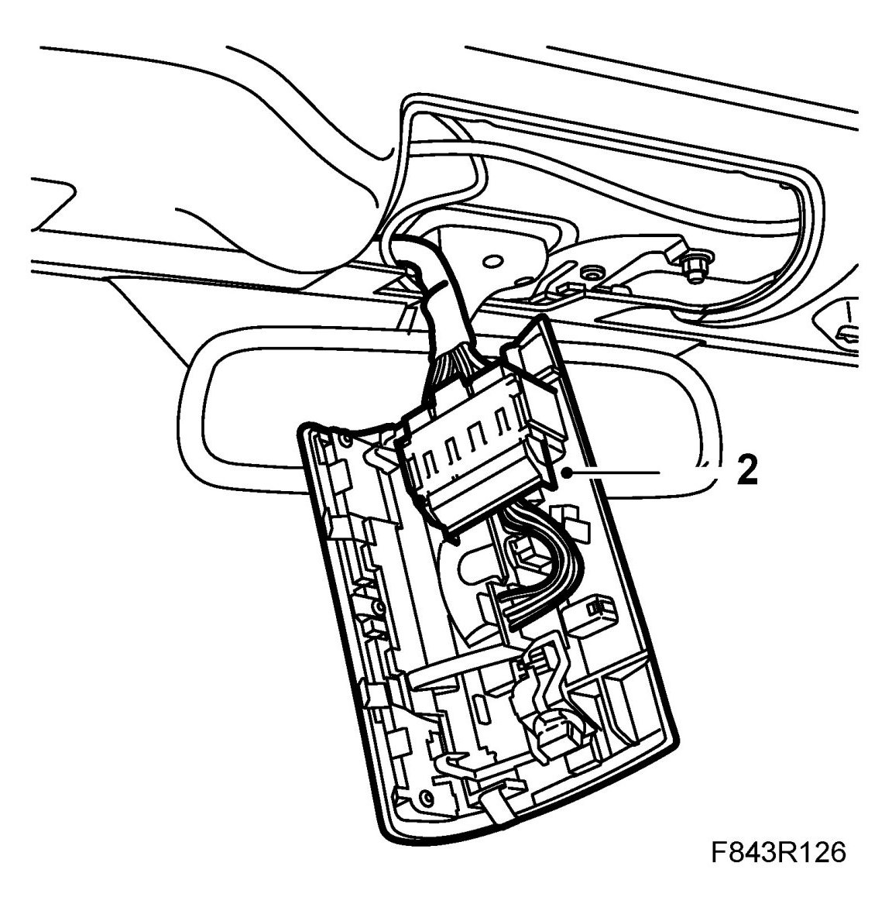
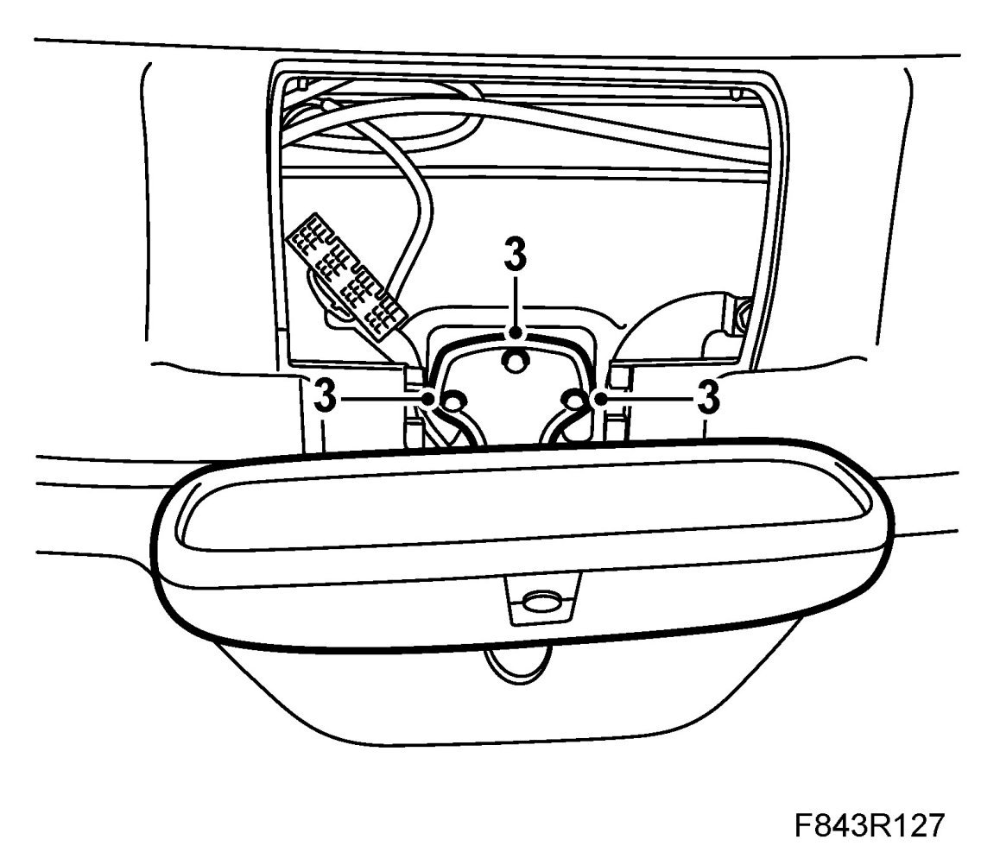
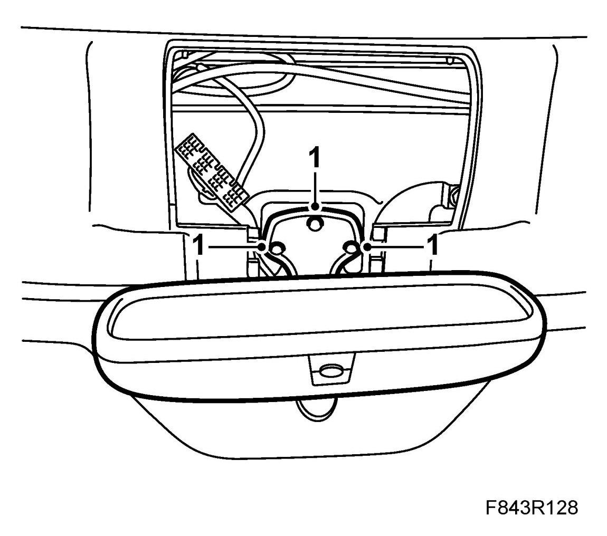
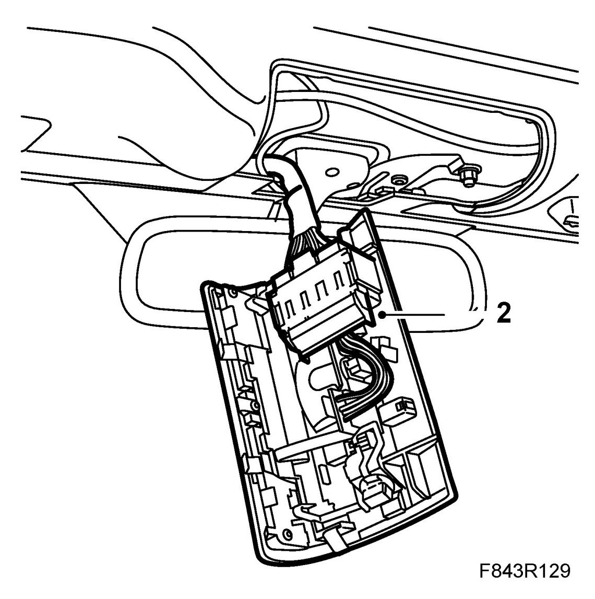
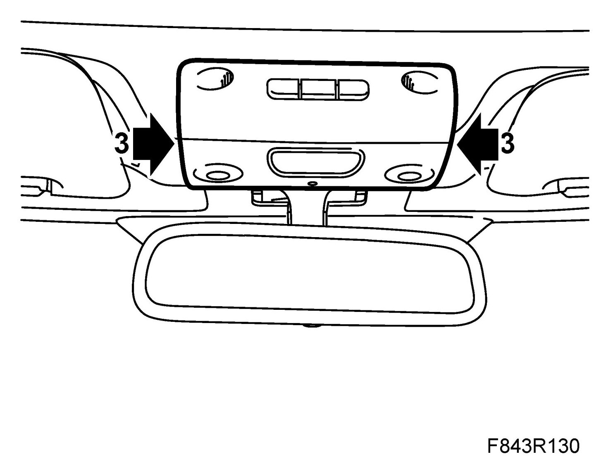

Interior Rear View Mirror, CV
Interior Rear View Mirror, CV
To remove
1. Remove the interior lighting.

IMPORTANT: Take care when releasing the locking mechanism on the connector so as not to damage the connector. Pull the halves straight apart to avoid bending the pins. For further information regarding connectors, refer to Connectors, handling and inspection.
2. Unplug the interior lighting connectors.

3. Undo the interior rear-view mirror mounting screws and remove the mirror.

To fit
1. Fit the interior rear-view mirror.

IMPORTANT: Take care when plugging in the connector so as not to damage or press out the pins/sleeves in the connector. For further information regarding connectors, refer to Connectors, handling and inspection.
2. Plug in the interior lighting connectors.

3. Fit the interior lighting.
